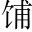

屈原者，名平，楚之同姓也。為楚懷王左徒左徒，即今左、右拾遺之徒。。博聞強志，明於治亂，嫻於辭令嫻，習也。。入則與王圖議國事，以出號令；出則接遇賓客，應對諸侯，王甚任之起敘任用之專，後段節節敘其疏而見放，妙得原委。。
上官大夫靳尚。與之同列，爭寵而心害其能此句怕人。。懷王使屈原造為憲令，屈平屬燭。草稿未定。上官大夫見而欲奪之，屈平不與，因讒之讒屈原作兩節寫，害其能一節虛，奪草稿一節實。曰：「王使屈平為令，眾莫不知，每一令出，平伐其功曰：以為「非我莫能為」也語中庸主之忌。。」王怒而疏屈平以下並史公變調，序《離騷》，即用騷體。。
屈平疾王聽之不聰也，讒諂之蔽明也，邪曲之害公也，方正之不容也，故憂愁幽思而作《離騷》先寫作《離騷》之由。。離騷者，猶離憂也離，遭也。○注一句。下忽入議論，奇妙。。夫天者，人之始也；父母者，人之本也。人窮則反本提「窮」字。，故勞苦倦極，未嘗不呼天也；疾痛慘怛，未嘗不呼父母也道出人情，真而切。。屈平正道直行，竭忠盡智以事其君，讒人間之，可謂窮矣應「窮」字。。信而見疑，忠而被謗，能無怨乎提「怨」字。？屈平之作《離騷》，蓋自怨生也應「怨」字。○迴環曲折，多永言之致。。《國風》好色而不淫，《小雅》怨誹而不亂。若《離騷》者，可謂兼之矣謂好色雲者，以《離騷》有宓妃等事，然原特假借以思君耳，非如《國風》之思也，而史公亦假借用之。○比《騷》於《詩》，深得旨趣。。上稱帝嚳，下道齊桓，中述湯、武，以刺世事。明道德之廣崇，治亂之條貫，靡不畢見。其文約，其辭微，其志潔，其行廉，其稱文小而其指極大，舉類邇而見義遠。其志潔，故其稱物芳。其行廉，故死而不容。自疏濯淖鬧。汙泥之中淖，溺也。，蟬蛻退。於濁穢蟬蛻，如蟬之去皮也。，以浮游塵埃之外，不獲世之滋垢，皭嚼。然泥而不滓子。者也皭，疏靜之貌。滓，濁也。。推此志也，雖與日月爭光可也極贊屈原。○以上《離騷》只虛寫。。
屈原既絀間接。又入敘事。，其後秦欲伐齊，齊與楚從親，惠王患之，乃令張儀詳同佯。去秦，厚幣委質事楚，曰：「秦甚憎齊，齊與楚從親，楚誠能絕齊，秦願獻商、於之地六百里。」楚懷王貪而信張儀，遂絕齊，使使如秦受地。張儀詐之曰：「儀與王約六裡，不聞六百里詳張儀始終事，為屈原諫楚王張本。。」楚使怒去，歸告懷王。懷王怒，大興師伐秦。秦發兵擊之，大破楚師于丹、淅丹、淅，皆縣名，在弘農。，斬首八萬，虜楚將屈匄蓋。，遂取楚之漢中地。懷王乃悉發國中兵，以深入擊秦，戰於藍田。魏聞之，襲楚至鄧。楚兵懼，自秦歸。而齊竟怒不救楚，楚大困一段。。
明年，秦割漢中地與楚以和即割楚地，以與楚和。。楚王曰：「不願得地，願得張儀而甘心焉。」張儀聞，乃曰：「以一儀而當漢中地，臣請往如楚又算定懷王。。」如楚，又因厚幣用事者臣靳僅。尚，而設詭辨於懷王之寵姬鄭袖長句正是省句。。懷王竟聽鄭袖，復釋去張儀二段。○兩段詞簡而情備。。是時屈原既疏忽接入本傳。，不復在位，使於齊，顧反，諫懷王曰：「何不殺張儀？」懷王悔，追張儀不及只「為何不殺張儀」一句，乃倒裝楚願得張儀一段，又倒裝張儀詐楚一段，意思在此，而序事在彼。。
其後，諸侯共擊楚，大破之，殺其將唐昧張儀詐楚，客也，於此一結。。
時秦昭王與楚婚，欲與懷王會又起一難。。懷王欲行，屈平曰：「秦，虎狼之國，不可信，不如無行。」懷王稚子子蘭勸王行：「奈何絕秦歡伏再用之根。! 」懷王卒行。入武關，秦伏兵絕其後，因留懷王，以求割地。懷王怒，不聽。亡走趙，趙不內納。。復之秦，竟死於秦而歸葬懷王一欺於秦而國削，再欺於秦而身死。為屈原作證，亦為楚辭作序也。。
長子頃襄王立，以其弟子蘭為令尹再用子蘭，深著楚王之不明也。。楚人既咎子蘭以勸懷王入秦而不反也。
屈平既嫉之嫉子蘭。先從楚人說起，見非屈原之私怨。，雖放流，眷顧楚國，繫心懷王，不忘欲反，冀幸君之一悟，俗之一改也推屈平本意作議論。。其存君興國，而欲反覆之，一篇之中三致意焉忽又轉到《離騷》上。。然終無可奈何，故不可以反應「不忘欲反」。，卒以此見懷王之終不悟也應「冀君之一悟」。。人君無愚智、賢不肖又寬一步。，莫不欲求忠以自為，舉賢以自佐，然亡國破家相隨屬，而聖君治國累世而不見者，其所謂忠者不忠，而所謂賢者不賢也泛泛感論。包羅古今無窮事。。懷王以不知忠臣之分，故內惑於鄭袖，外欺於張儀，疏屈平而信上官大夫、令尹子蘭。兵挫地削，亡其六郡，身客死於秦，為天下笑將前事總作一收。。此不知人之禍也繳斷一句。。《易》曰：「井渫屑。不食，為我心惻，可以汲。王明，並受其福渫，不停汙也。井渫而不食，使我心惻然，以其可用汲而不汲也。如有王之明者，汲而用之，則上下並受其福矣。。」王之不明，豈足福哉憤切語。！
令尹子蘭聞之接上屈平既嫉之，妙。大怒，卒使上官大夫短屈原於頃襄王迴應上官大夫。。頃襄王怒而遷之。
屈原至於江濱，被披。發行吟澤畔，顏色憔悴，形容枯槁極寫落魄悲憤之狀。○以下《漁父》辭。。漁父見而問之曰：「子非三閭大夫歟三閭，掌王族昭、屈、景三姓之官。？何故而至此？」屈原曰：「舉世混濁而我獨清，眾人皆醉而我獨醒，是以見放。」漁父曰：「夫聖人者，不凝滯於物而能與世推移似老氏之言。。舉世混濁，何不隨其流而揚其波？眾人皆醉，何不其糟而啜其醨醨，薄酒。？何故懷瑾握瑜瑾、瑜，皆美玉。而自令見放為只就漁父口中，翻出一段至理可參。有情有態，可詠可歌，詞家風度。? 」屈原曰：「吾聞之，新沐者必彈冠，新浴者必振衣彈而振之，去其塵也。，人又誰能以身之察察，受物之汶汶問。者乎察察，淨潔也。汶汶，垢蔽也。！寧赴常流而葬乎江魚腹中耳常流，猶長流也。○汨羅之志已決。，又安能以皓皓之白而蒙世之溫蠖枉入聲。乎溫蠖，猶惛憒，《楚詞》作「塵埃」。○一氣流轉，機神跌宕。! 」乃作《懷沙》之賦《懷沙》賦刪去。。
於是懷石遂自投汨覓。羅以死汨水在羅，故曰汨羅，今長沙屈潭是也。。
屈原既死之後，楚有宋玉、唐勒、景差磋。之徒者，皆好辭而以賦見稱。然皆祖屈原之從容辭令，終莫敢直諫借宋玉等，前襯屈原，後引賈誼。。其後，楚日以削，數十年竟為秦所滅人之雲亡，邦國殄瘁。。
自屈原沉汨羅後百有餘年，漢有賈生，為長沙王太傅，過湘水，投書以吊屈原借投書事，接下《賈誼傳》。。
太史公曰：餘讀《離騷》、《天問》、《招魂》、《哀郢》皆《離騷》篇名。，悲其志讀其文而悲其志。。適長沙，觀屈原所自沉淵，未嘗不垂涕，想見其為人遊其地而想其人。。及見賈生吊之，又怪屈原以彼其材，遊諸侯，何國不容，而自令若是即用他吊屈原之意，以嘆賈生。！讀《服鳥賦》楚人命鴞曰服。賈生作《服賦》。，同生死，輕去就，又爽然自失矣自悲自吊。○此屈、賈合贊，凡四折，繚繞無際。。
史公作《屈原傳》，其文便似《離騷》，婉雅悽愴，使人讀之不禁歔欷欲絕。要之窮愁著書，史公與屈子實有同心，宜其憂思唱嘆，低迴不置雲。